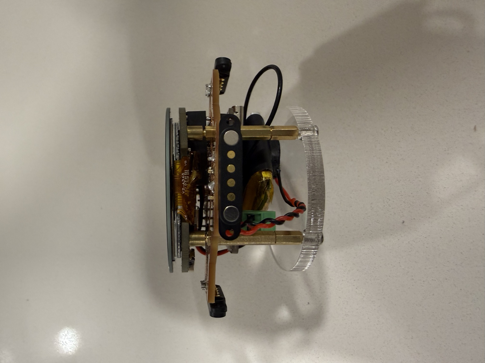
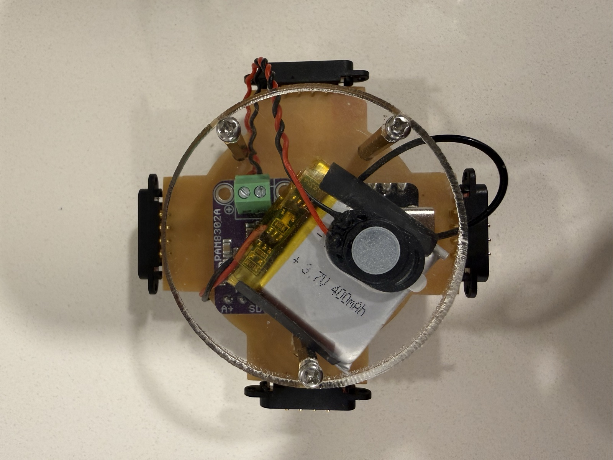
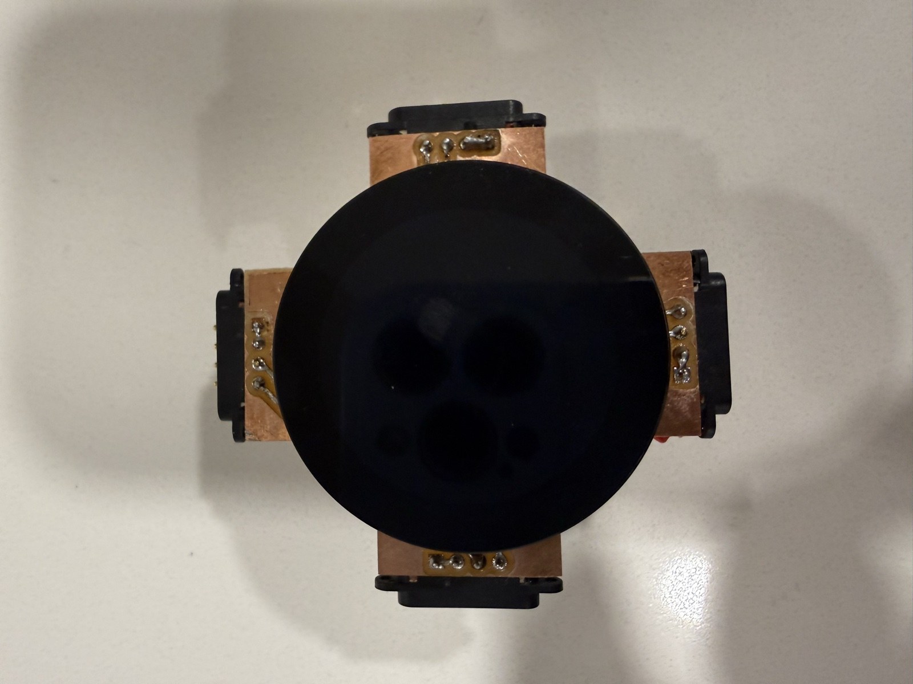
Melodia is a platform for building games out of small, round-screened tiles that magnetically connect to each other, know which sides they're connected on, talk to each other wirelessly, and each carry their own speaker. Snap two tiles together and like cells they become one organism: a shared space in which their systems interact through touch, swipe, and proximity.
The project has been developing all summer: it began in Week 1 as a musical card game concept (solfège cards on a growing 4×4 grid); in Week 4 two breadboard tiles first sensed each other with hall-effect sensors; in Week 5 I committed to it as the final project, swapped LEDs for the Seeed round touch display, and playtested the rules in a browser prototype; and in Week 7 the hall sensors gave way to 4-pin magnetic connectors (recommendation from Nathan for me and Joshua's respective projects vs. hall sensors) which I then used to in a voltage-dividing network — the design that became this board.
The current build: a custom single-layer PCB carrying a XIAO ESP32-C3, the round display, a PAM8302 audio amp and speaker, and four magnetic edge connectors, running a shared firmware shell (attract mode, game lobby, sound system menu, over-WiFi flashing, per-board calibration) with games plugged in as state machines — Snake is the first two-board game.
From the system menu any board enters flash mode: it joins the
WiFi network, announces itself over mDNS as
melodia-XXXX (the suffix comes from the chip's MAC), and
shows its hostname and IP on screen. flashall.sh compiles
the sketch once and pushes it to every board it can find on wifi.
Each board's voltage network is calibrated once through a guided wizard: it captures the connection states, fits the ADC's linear region, and stores the measured 16-entry voltage table in the Xiao's 4 MB flash (NVS). Board is calibrated forever; at runtime the sense loop averages 32 ADC samples, snaps to the nearest expected level, and debounces over three stable frames.
begin/loop);
the shell owns everything else.Each side's magnetic connector loops two pins back to the board when a neighbor mates with it, closing a circuit that adds that side's resistor to a voltage divider. Four sides, four different resistor values such that there are 16 connection combinations producing a distinct voltage on a single analog pin.
Expected voltages for both resistor sets (full working sheet: voltage network spreadsheet):
| N | E | S | W | Connected sides | THT expected V 10k pull-up; 10k/20k/40k/80k |
SMD expected V 4.7k pull-up; 5.6k/10k/22k/47k |
|---|---|---|---|---|---|---|
| 0 | 0 | 0 | 0 | None | 3.300 | 3.300 |
| 0 | 0 | 0 | 1 | W | 2.941 | 3.000 |
| 0 | 0 | 1 | 0 | S | 2.627 | 2.719 |
| 0 | 0 | 1 | 1 | S + W | 2.394 | 2.512 |
| 0 | 1 | 0 | 0 | E | 2.269 | 2.245 |
| 0 | 1 | 0 | 1 | E + W | 2.093 | 2.102 |
| 0 | 1 | 1 | 0 | E + S | 1.929 | 1.960 |
| 0 | 1 | 1 | 1 | E + S + W | 1.800 | 1.850 |
| 1 | 0 | 0 | 0 | N | 1.650 | 1.794 |
| 1 | 0 | 0 | 1 | N + W | 1.555 | 1.702 |
| 1 | 0 | 1 | 0 | N + S | 1.463 | 1.607 |
| 1 | 0 | 1 | 1 | N + S + W | 1.388 | 1.533 |
| 1 | 1 | 0 | 0 | N + E | 1.344 | 1.429 |
| 1 | 1 | 0 | 1 | N + E + W | 1.281 | 1.370 |
| 1 | 1 | 1 | 0 | N + E + S | 1.217 | 1.308 |
| 1 | 1 | 1 | 1 | N + E + S + W | 1.165 | 1.258 |
Expected A0 voltage for every connection state, against 3.3 V. The soldered board adds a 33k bleeder to ground (so "none" reads ≈2.86 V, inside the A0's) and uses a 5.1k pull-up with 5.1k/10k/33k/75k branches — per-board calibration absorbs the differences either way.
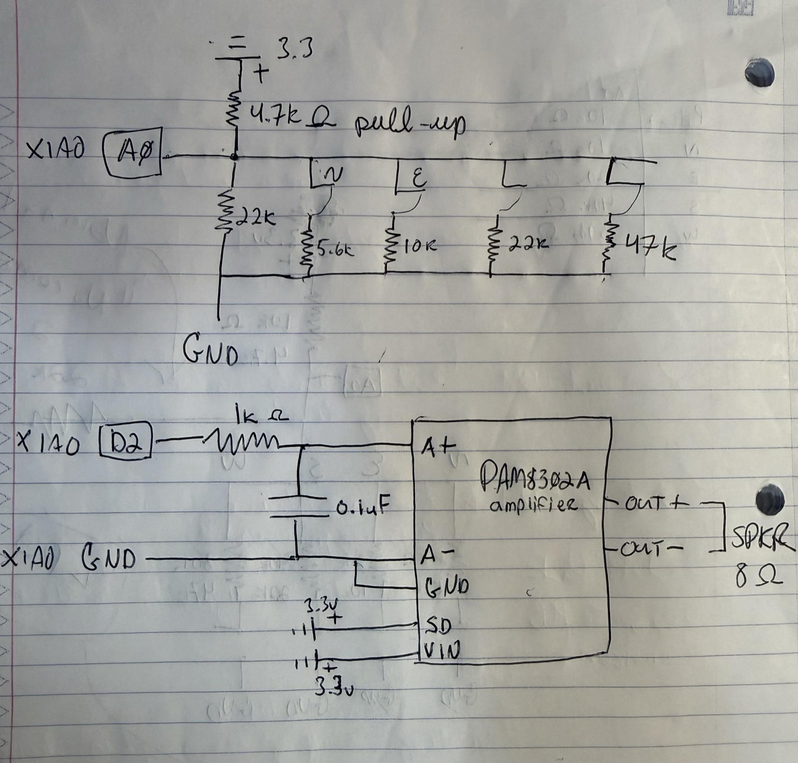
The circuit fits in a notebook sketch: the voltage-dividing network on the left (four connector branches plus pull-up into A0), and the audio chain on the right — the XIAO's PWM through a 1k/0.1µF low-pass into the PAM8302 amplifier, out to the 8Ω speaker.
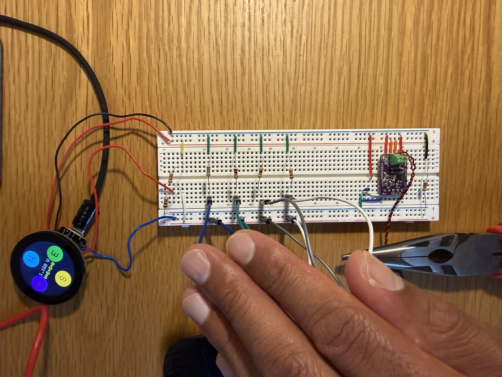
The breadboard proof: XIAO ESP32-C3, the THR resistor ladder with jumper cables standing in for the magnetic connectors. Amp is driving the speaker. Every value on the PCB was validated here first — and this build is why calibration became a firmware feature rather than a solder-better resolution.
The board itself is single-layer FR1, designed via Kicad, and milled to a plus shape so the four connector arms reach the case edge, with the XIAO and display stacked in the middle:
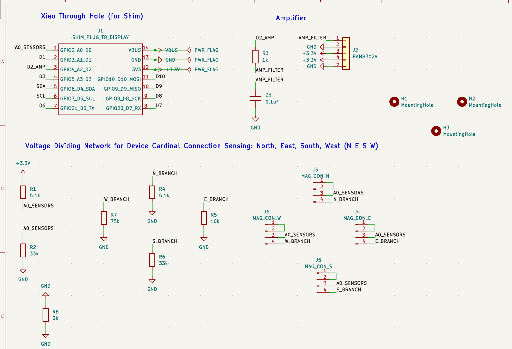
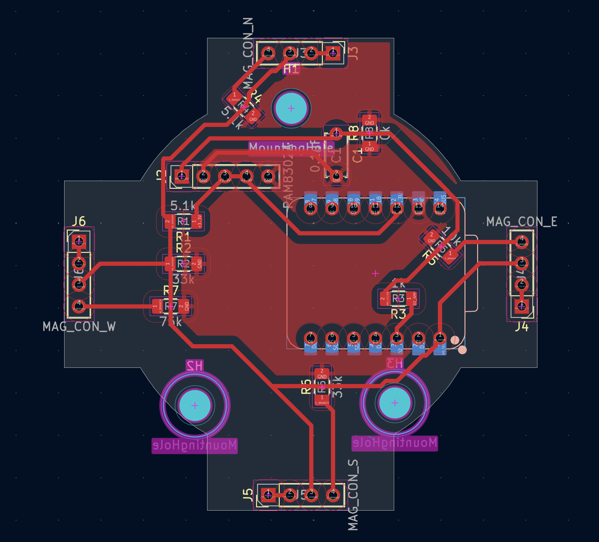
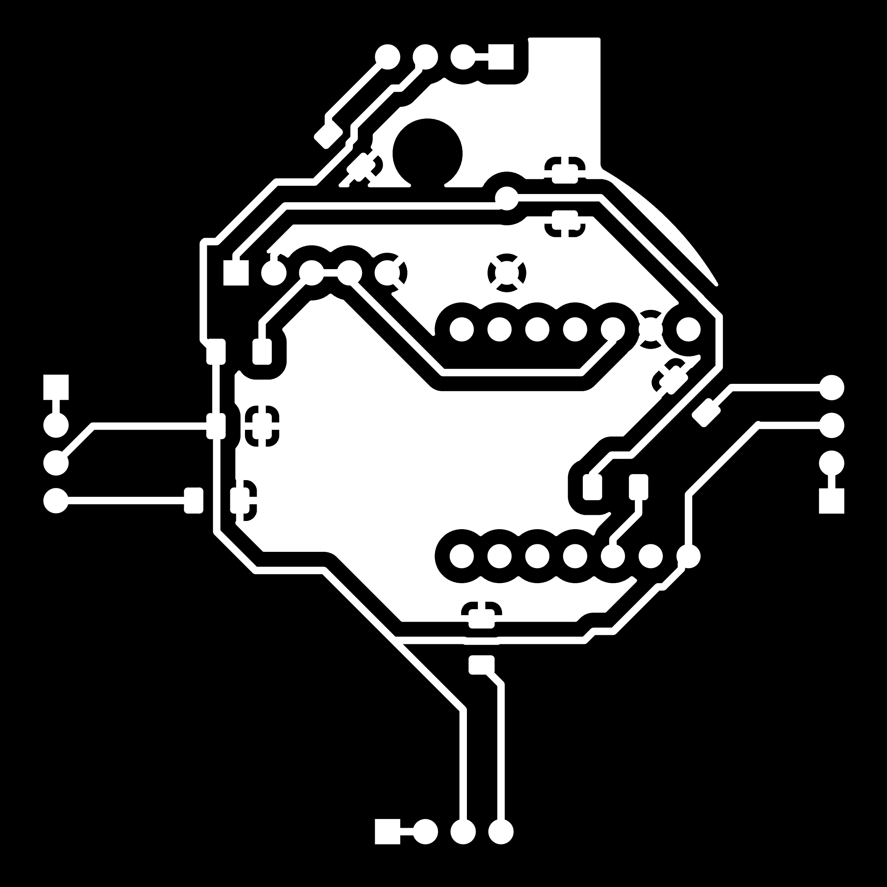
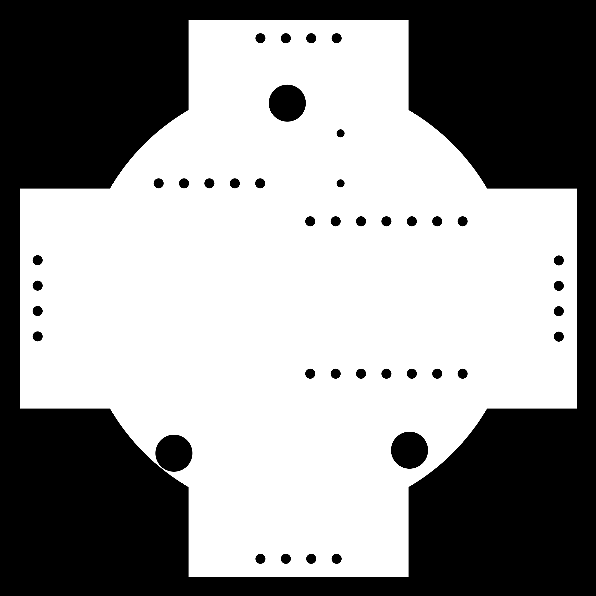
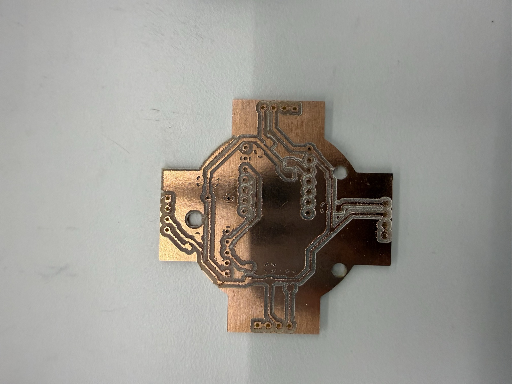
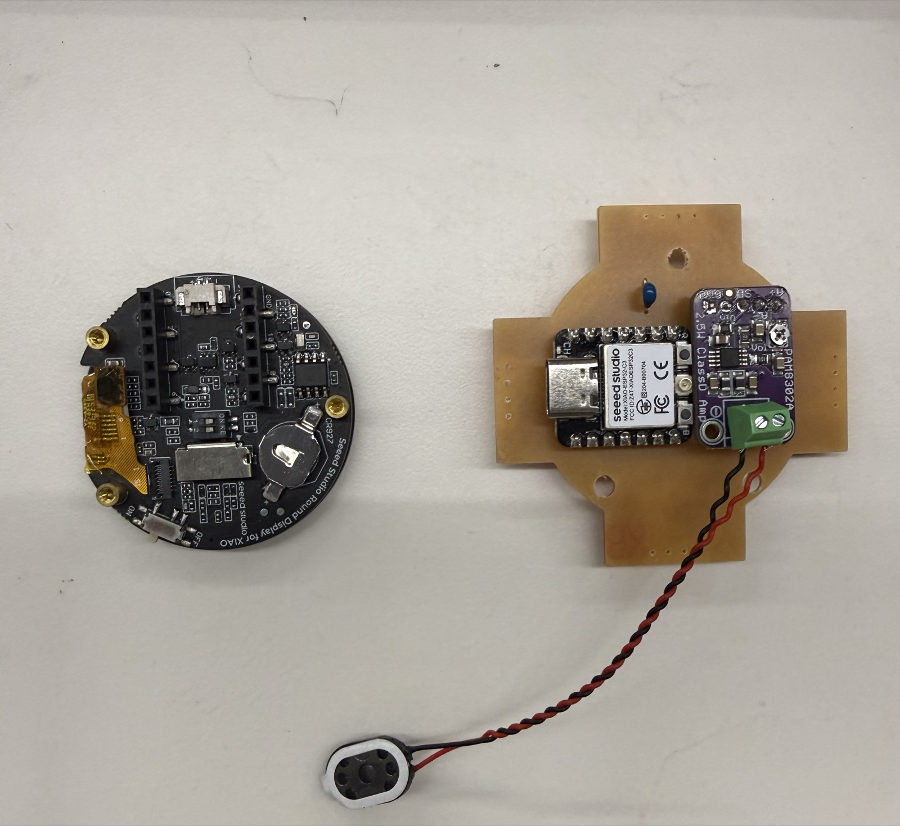
| Qty | Item | Notes |
|---|---|---|
| 1 | XIAO ESP32-C3 | brains + ESP-NOW radio |
| 1 | Seeed Round Display for XIAO | 1.28″ 240×240 touch, battery charging |
| 1 | PAM8302 amplifier | Jessinie clone of the Adafruit board |
| 1 | 8Ω speaker | |
| 4 | 4-pin magnetic connectors | one per side (N/E/S/W) |
| 1 | FR1 PCB | milled single-layer, files above |
| 1 | 400 mAh 3.7 V LiPo battery | |
| 3 | small M2 brass standoffs | |
| 3 | mini M2 brass standoffs | |
| 3 | short M2 screws | |
| 1 | 4 mm acrylic sheet | CNC base, 42 mm diameter — melodia_base.dxf |